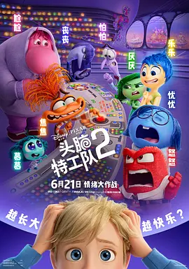

8.4
头脑特工队2
Inside Out 2
2024
美国
评分 8.4
导演:
凯尔西·曼
演员:
艾米·波勒 / 玛雅·霍克 / 肯辛顿·托尔曼 / 莉萨·拉皮拉 / 托尼·海尔
类型:
冒险,喜剧,奇幻
剧情简介
莱莉迎来青春期后的第一个夏天，原本熟悉的大脑总部突然被成堆的机械臂包围，像是一场没有预告的施工改造。乐乐和伙伴们正忙着整理核心记忆，却在混乱中看到陌生的情绪闯入，一声略显急促的自我介绍，让焦焦的出现显得既突兀又难以忽视。她的能量像一道亮红的脉冲，在控制台前摇晃着，引发了新的波动。随着新情绪接连到来，原本稳定的系统开始层层叠叠地冲撞。莱莉面对社交压力时的微妙迟疑、训练中的不自信、对未来的模糊恐惧，都被情绪们敏锐捕捉。总部里，各种记忆球被不断搬动、重排，承载着她在成长路口的喜悦、羞涩、紧张与渴望。乐乐试图维持以往的秩序，却发现青春期的情绪结构比想象中更复杂；焦焦的介入让许多被压抑的体验涌上台面，像是一场无法暂停的情绪洪流。在这场急速变化的冒险中，各个情绪被迫重新定义彼此的位置。他们穿越崩塌的信心岛，也在遗忘区深处看见莱莉更真实的一面。随着旅程推进，不同情绪之间逐渐学会聆听对方的声音，共同面对青春期带来的不确定。莱莉的内心世界也在震荡中重塑，映照出一个少年的敏感成长，以及在混乱中学会理解自己的过程。